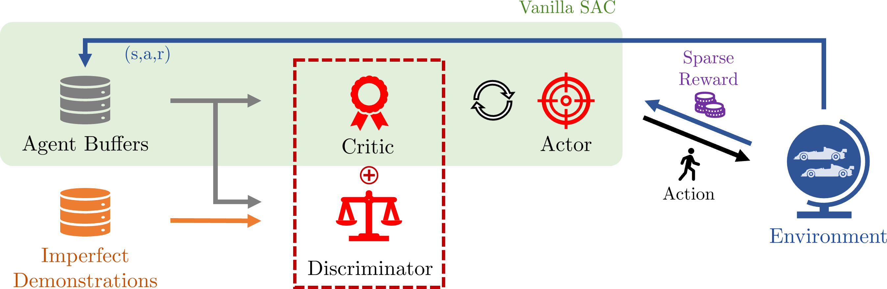

Comparison of the driving performance between the proposed DAQ-SAC and other baselines.
We use Assetto Corsa (AC) as the simulation environment.
Abstract
Recent advances in Reinforcement Learning (RL)
have shown that end-to-end controllers can achieve promising
results in autonomous racing, effectively handling highly
nonlinear dynamics and extreme action constraints. However,
these systems often suffer from exploration inefficiencies, particularly
in sparse reward settings such as lap completion tasks.
Learning from Demonstrations (LfD) methods have emerged
as a potential solution, leveraging expert demonstrations to
guide the learning process. In this work, we propose a class
of Discriminator-Augmented Q-function (DAQ) RL algorithms
that effectively utilize imperfect demonstrations to guide exploration
by enforcing occupancy measure matching. We conduct
experiments using Assetto Corsa, a widely recognized simulator
for its realistic modeling of car dynamics. The evaluation
results show that DAQ aided Soft Actor-Critic (SAC) accelerates
learning, achieves better final lap times than existing methods,
and even outperforms the given demonstrations.
Approach

Above figure shows an overview of DAQ-SAC. Based on the original SAC algorithm,
additional values from the discriminator is augmented to the Q-function.
Discriminator is learned through a positive-unlabeled setup, enabling the
continuous improvement of positive experience sets.
Pseudo code of our algorithm is as follows:
Experiment
We consider the lap completion task in car racing, which aims to achieve minimum lap-time.
Above figure shows the experimental setup :
(a) Silverstone1967 track and Ferrari 458 GT2 car model in Assetto Corsa,
(b) a subset of the observations fed to the networks, where all the components are
selected to ensure they are locally collected.
Interfacing framework is built meticulously using AC APIs.
Overall flow is shown in the figure above.
Firstly, necessary data such as vehicle velocity, acceleration,
and contact flags are collected using supported APIs.
A real-time data parser then passes those data into
our virtual RL environment, along with additional track data.
The route manager parses local map data such as preview
curvatures, slopes, and bank angles, and a 2D rangefinder is implemented.
The agent interacts with this virtual environment and generates
actions, which are then passed through
the virtual gamepad to transfer the control inputs to AC.
We set the task which posseses following key challenges :
Long-horizon task : Require long and precise sequence of actions to successfully complete a lap.
Semi-sparse reward : Designed as a terminal reward episodic task with a few intermediate rewards at checkpoints.
Low sampling speed : Unable to fast-forward or duplicate the simulation.
Sub-optimal demonstrations : Low-quality demonstrations are provided.
Thus, our goal is to show that DAQ-SAC can effectively utilize the given imperfect demonstrations
to guide exploration and achieve better performance than existing methods in the long-horizon and sparse reward tasks.
Result
We present the experimental results to address the following questions:
Training efficiency : How much does DAQ-SAC boost theinitial learning stage?
Final Performance : Does DAQ-SAC achieve the best performance after sufficient training steps?
Learned Behavior : Is the agent’s learned racing behavior comparable to that of a expert human driver?
Training Efficiency
Training efficiency is compared with the standard of the
required training steps until the agent completely finish a
lap, and the result it shown in the figure above.
Our approach exhibits the best performance in two aspects: required training steps
and the episode return at that steps. This indicates that the
DAQ-SAC effectively utilizes the given demonstrations to
accelerate the learning process. Notably, the IL-based algorithms
fail to learn how to drive, highlighting the difficulty
of generalization without the agent’s online exploration.
Final Performance
Algorithm
Demonstration
DAQ-SAC
vSAC
SACBC
Lap time
1:37.330
1:29.767
1:39.624
1:38.539
Above table shows the comparison of the best lap times
achieved achieved after 500,000 training steps. The lap time
for demonstrations indicates the average lap time among the
existing data. Our approach achieves the fastest lap time
of 1:29.767 and maintains higher speeds in all sections
compared to the best performance of the demonstrations
Learned Behavior
Above figure shows the agent’s trajectory
for achieving the minimum lap time, with three corners of
varying curvatures selected for detailed visualization. The
agent effectively uses the full width of the track to minimize
the curvature of its path and maximize speed, following
an ”out-in-out” trajectory—a technique commonly used by
expert human drivers. By learning this optimal strategy, the
agent attains higher speeds through these curve sections,
resulting in improved overall performance.